Covadonga
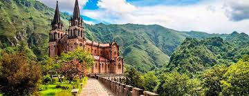Gijón
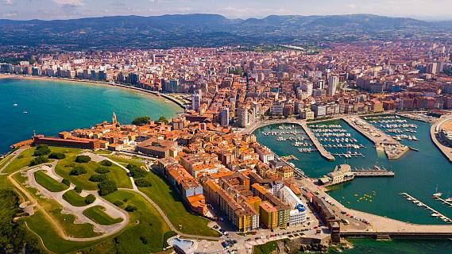Somiedo
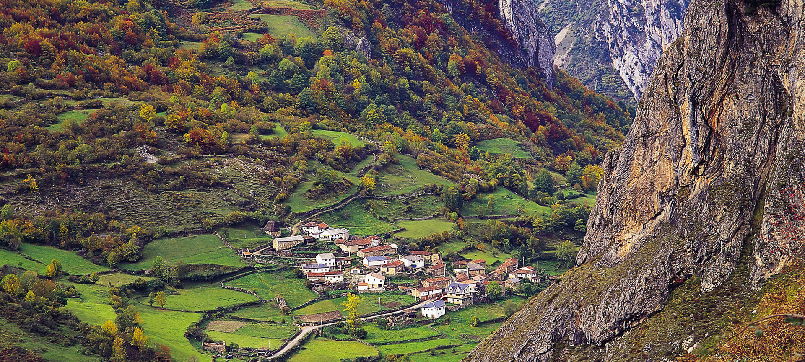Taramundi
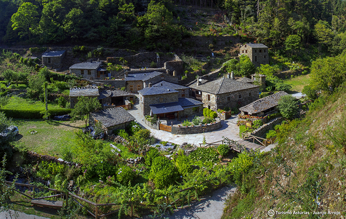Universidad Laboral
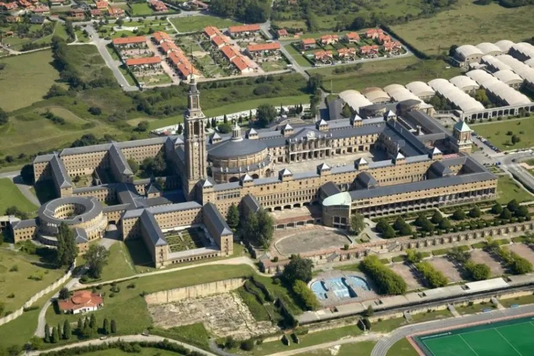Oviedo

Picos de Europa
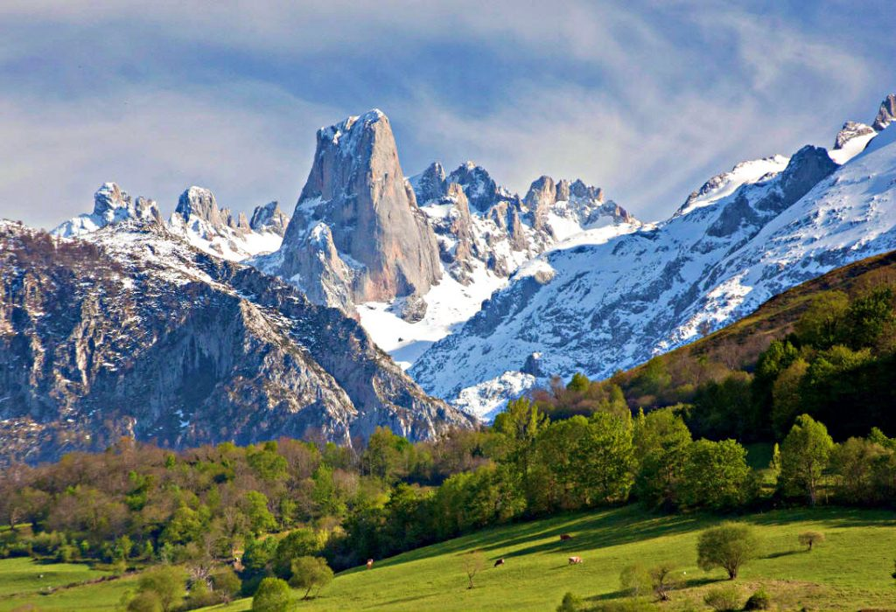Avilés
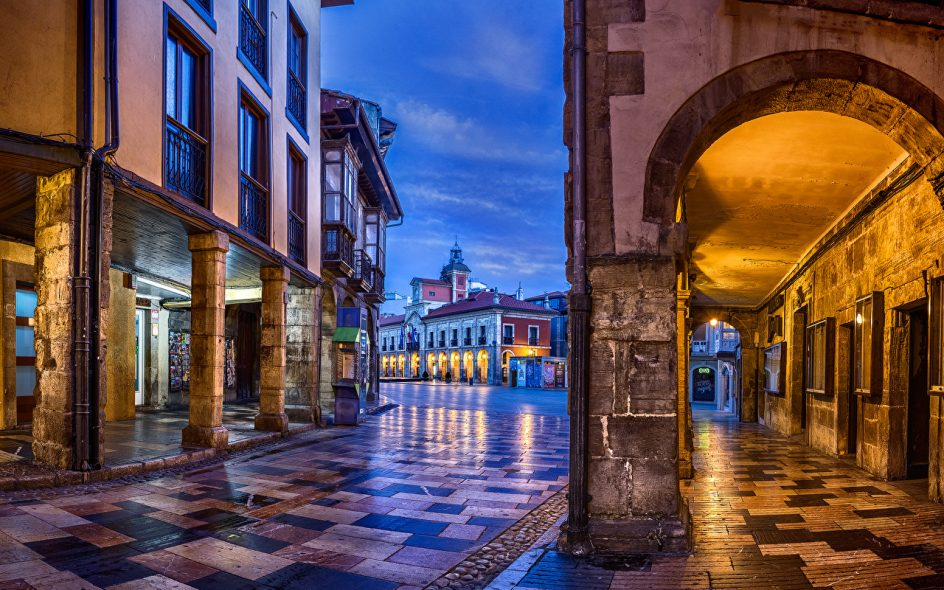Santa Maria del naranco
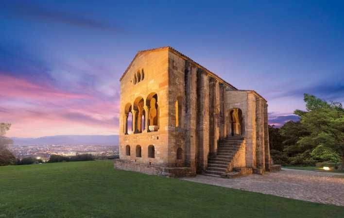
Esta página web ha sido creada con la intención de mostrar la belleza de la región Asturiana, desde su gastronomia,hablando de lugares poco conocidos por el turismo nacional (pero igualmente maravillosos, como los más conocidos), información climatologica (siempre importante en esta tierra), y consejos de que regalos y recuerdos se pueden comprar para sorprender a sus amigos o familiares, pasando por nombrar todo tipo de actividades que se pueden hacer a todos los niveles, tanto si viene en familia, como si se tiene un nivel deportivo y de resistencia mas alto(desde escalada, descenso de piraguas, rutas a caballo o a pie...)Asturias en imagenes
Covadonga 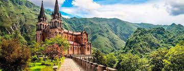 |
Gijón 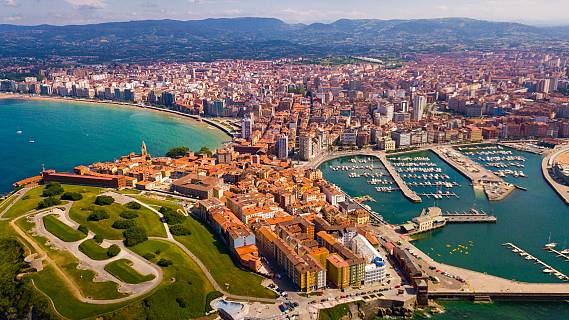 |
Somiedo 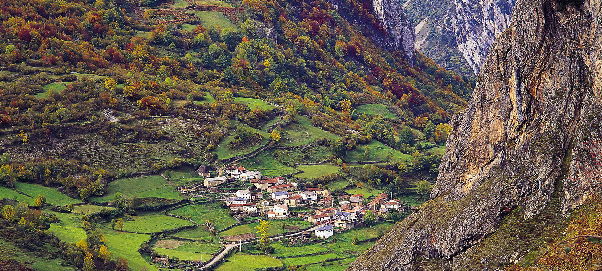 |
Taramundi 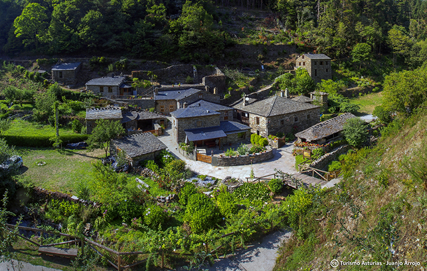 |
Universidad Laboral 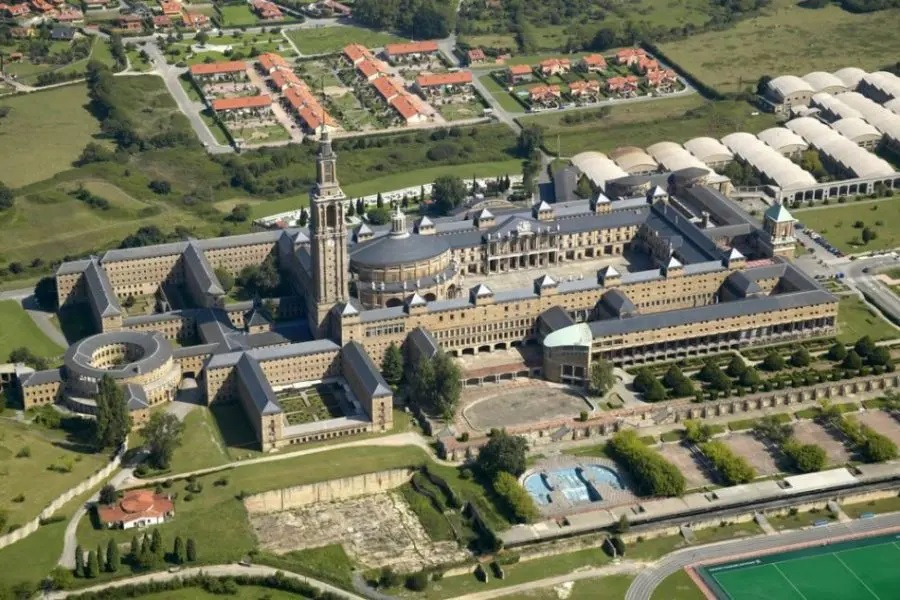 |
Oviedo |
Picos de Europa 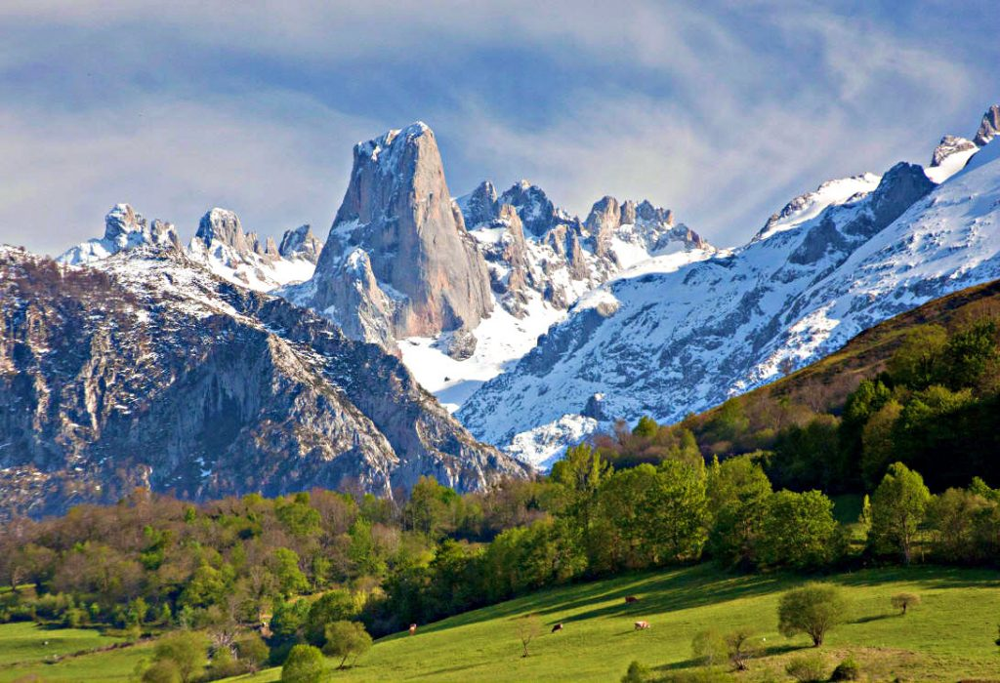 |
Avilés 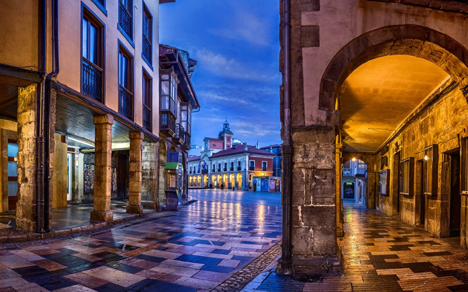 |
Santa Maria del naranco 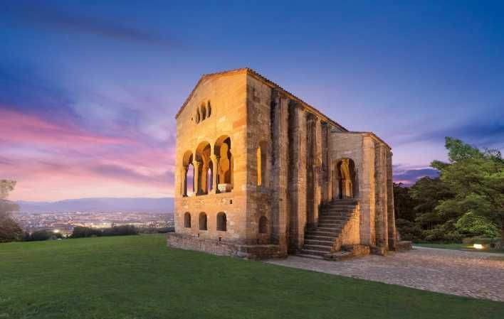 |